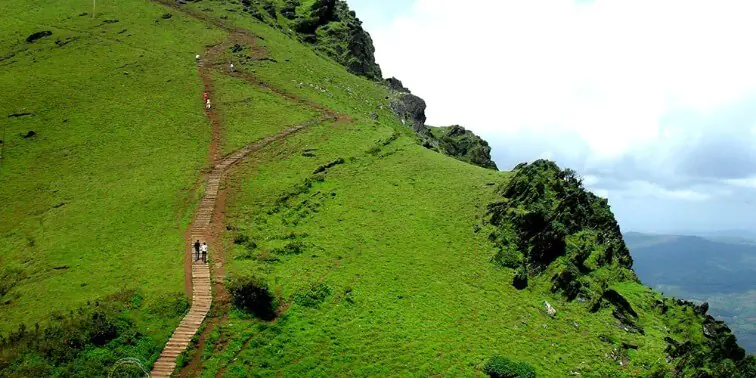
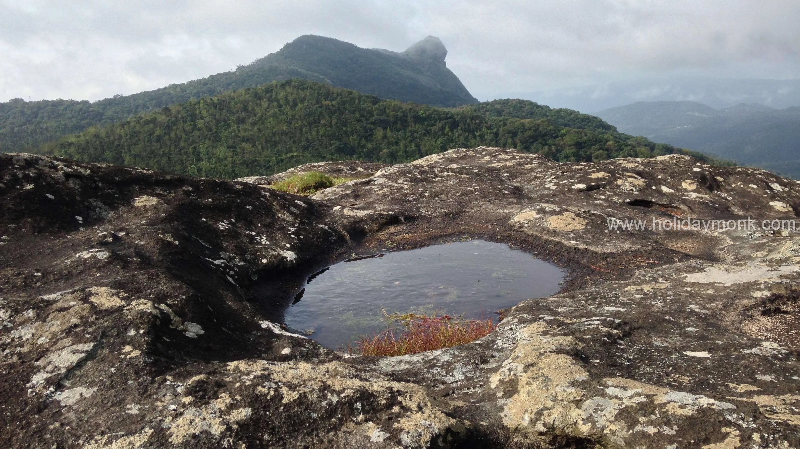

Local Experts
Born and raised in Chikkamagaluru we know which waterfall is flowing this week and which viewpoint is fog-free at 6 AM.

A local Chikkamagaluru travel company built on hospitality, honesty and a deep love for the Western Ghats.
Nitish Tours and Travels' in Chikmagalur provides customised journeys, recommendations, and door-to-door taxi services. From 2010, we have been recommended for our prompt service. Attention to detail remains the key factor when customers plan their holidays. Girish, the proprietor, is passionate about informing you about the best routes, season, and time to access your favourite travel destinations. We keep it simple. Our drivers are skilled, polite, and well-mannered. Our cars are well-maintained and ready to enable your comfortable journey. Nitish Tours and Travels has understood what it takes to enable this task. The knowledge of the best routes and weather conditions, language and ability to understand the customer's needs remain the defining aspects of a true service-oriented tour operator. Our drivers attend to the needs of the customer and are ready to pick up and drop off at any agreed time. Our customers appreciate quality in all aspects, and hence we strive towards excellence. We remain dedicated to our offering to make a customer's journey sweetly memorable. Our business has been successful owing to 'word-of-mouth', and it underlines our promise to every customer.
Call us and make a booking, and celebrate your journeys with Nitesh Tours and Travels.
With more than a decade of experience in the travel industry, we specialize in customized travel packages, local sightseeing, family tours, adventure trips, temple visits, and airport transportation.
Chikkamagaluru and its surrounding regions are among the most beautiful places in Karnataka. From coffee plantations and waterfalls to heritage temples and trekking trails, we help our customers experience the very best of South India.

Born and raised in Chikkamagaluru we know which waterfall is flowing this week and which viewpoint is fog-free at 6 AM.
Detailed quotes with kilometres, tolls, parking and driver allowance written down. No surprise charges at drop-off.
Sanitised, insured and regularly serviced vehicles from hatchbacks to 17-seater Tempo Travellers.
Verified drivers, live location sharing, first-aid kits and safe ghat-road driving practices on every trip.
Your dates, your pace, your budget. Add treks, temples, safaris or estate stays to any itinerary.
Real humans on WhatsApp and phone before, during and after your journey including late night airport runs.
Real feedback from families, couples, corporate groups and solo travellers who explored the Western Ghats with us.
Call us for same-day availability, customised itineraries and honest pricing. No hidden charges, ever.